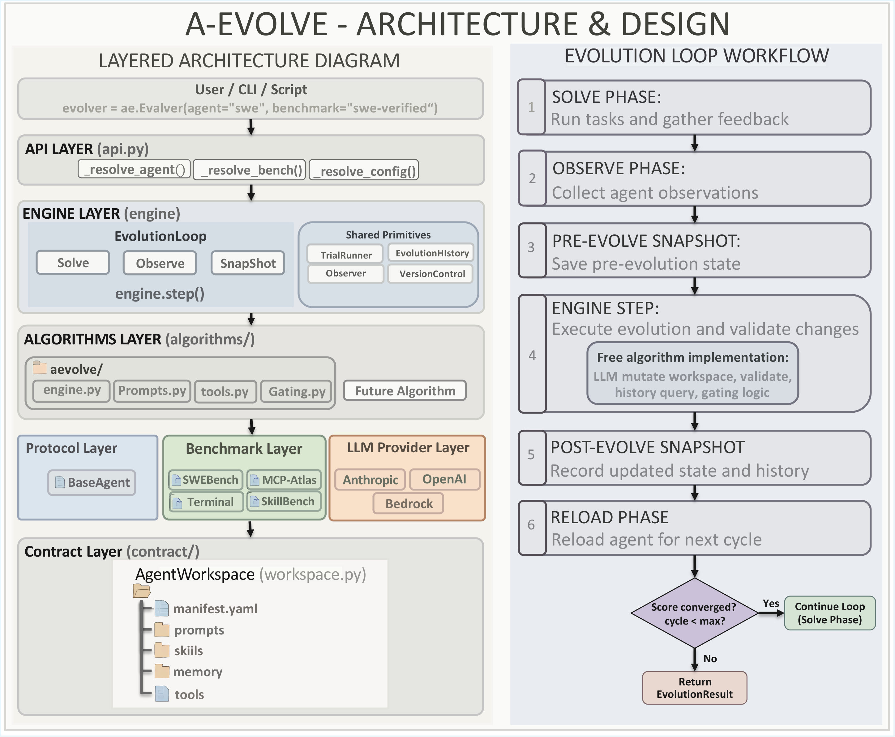
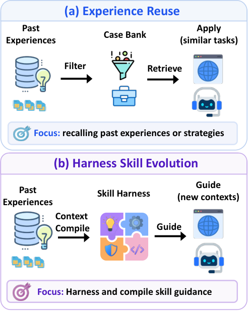
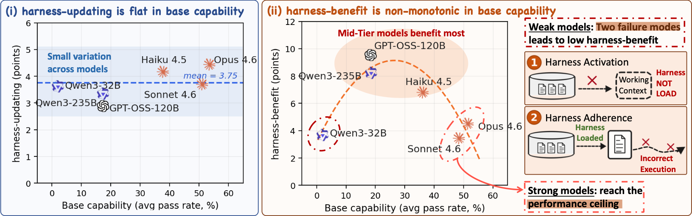
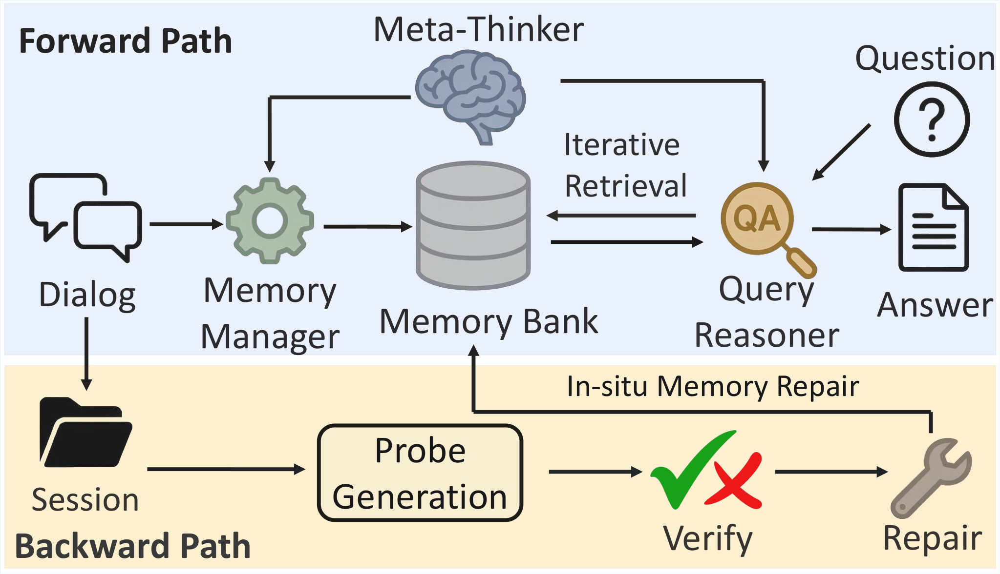
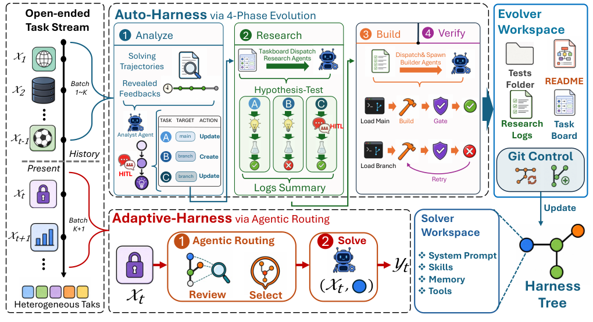
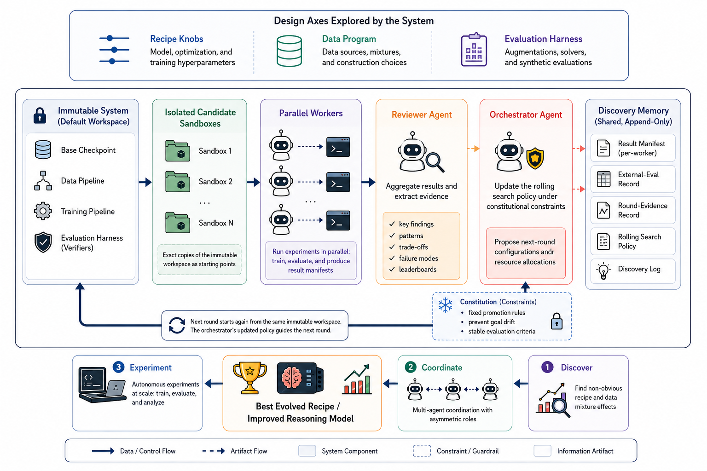
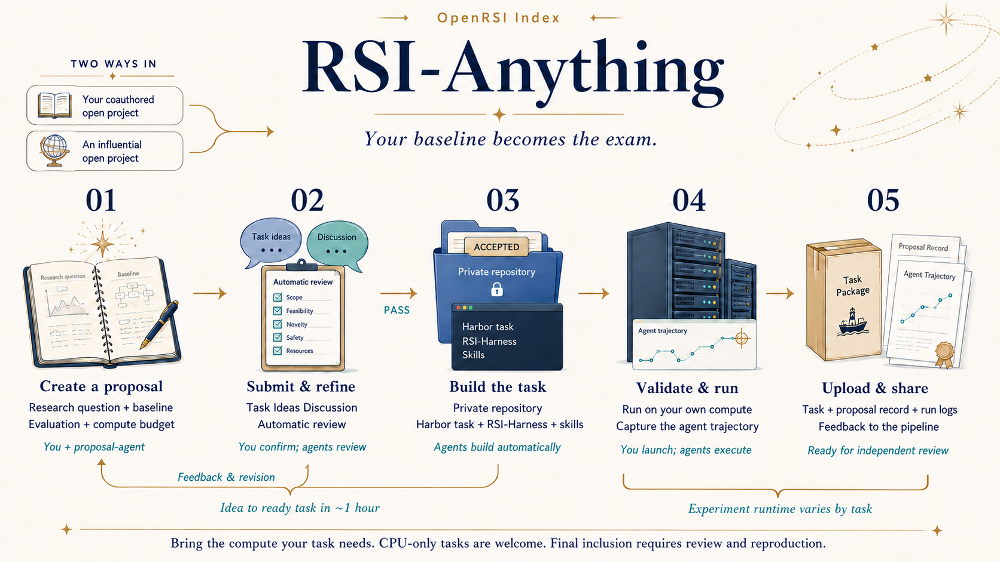

OPEN-SOURCE FRAMEWORK
A-Evolve
A shared framework for building evolvers that turn agent experience into durable improvements. The foundation for our work on online and adaptive harness learning.
Recursive self-improvement · Autonomous research
Founder & Research Lead, A-EVO Lab at Amazon
I study how AI can improve AI—from evolving agent harnesses to building autonomous research systems, evaluating their discoveries, and training models for research.
I lead A-EVO Lab at Amazon and co-lead OpenRSI Index. Previously, I worked at Microsoft Research and studied machine learning at Carnegie Mellon University (CMU).

A research lab at Amazon focused on recursive self-improvement.
Explore the lab ↗Learning from experience through persistent improvements to skills, memory, prompts, and workflows.

OPEN-SOURCE FRAMEWORK
A shared framework for building evolvers that turn agent experience into durable improvements. The foundation for our work on online and adaptive harness learning.

EMNLP 2026 · MAIN
Compiling noisy, one-shot execution experience into reusable skills for online harness learning.

EMNLP 2026
Separating the ability to produce harness updates from the ability to benefit from them.

EMNLP 2026 · MAIN
Coordinating memory construction and retrieval, with verification and repair before memory is finalized.

arXiv · 2026
Sustaining agent performance on changing task streams through a stateful evolver, a harness tree, and task-wise routing.
Systems that organize and execute the research process: hypotheses, experiments, evaluation, and revision.

arXiv · 2026
An autonomous system conducts a multi-week post-training campaign and revises its search policy when its internal proxy becomes misleading.
Reported score: 0.86 · top human submission: 0.87
Evaluating autonomous research against real model-development problems and human baselines.

BENCHMARK · PROJECT CO-LEAD
An open benchmark for AI research agents, built around auditable tasks and fixed verifiers.
My contribution: co-led the project; designed, implemented, and ran the benchmark, including its Signature Tasks.
Marin-Scaling-Ladder · Qwen-122B-RL-Merge · GPIC
Training models for autonomous research.
A forthcoming research direction.
Selected work on agent training, tool-use evaluation, and value-guided decoding.
ACL 2026
ICLR 2026
NeurIPS 2017